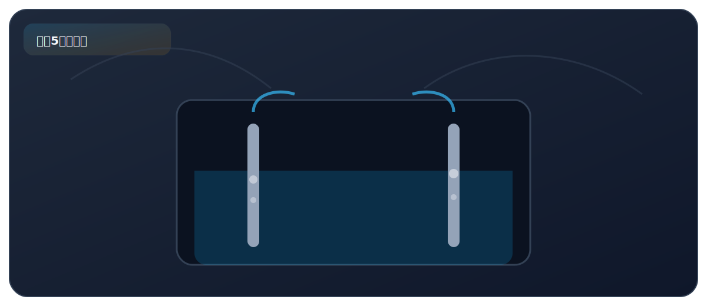

实验五、电解水实验

来自 PDF《化学实验基础知识及课本实验总结》的整理。建议：先读“实验原理”，再背“操作顺序”，最后用“误差分析/注意事项”拿分。
实验目标
- 通过电解水认识水的组成：水由氢、氧两种元素组成。
必背方程式
- 2H2O -> 2H2 + O2
核心原理
- 通电分解水：阴极产生 H2，阳极产生 O2（正氧负氢）。
- 理论体积比 V(H2):V(O2)=2:1；实际因 O2 溶于水等略偏差。
关键步骤（怎么做）
- 水中加入少量 NaOH 或稀 H2SO4 增强导电性。
- 通电后观察两极产生气泡，比较两侧气体体积。
- 检验：H2 点燃有“爆鸣”；O2 使带火星木条复燃。
高频考点（怎么拿分）
- 体积比 2:1 与质量比 1:8 都要会。
- 电解水属于化学变化。
安全提醒
- 检验 H2 要少量，远离火源先排尽空气再点燃，防止爆炸。
PDF摘录（原文提取，供对照）
化学方程式
- 电源 直流电 正极产生的为 O2，负极产生的为 H2；简记：“正氧负氢”。
- 理论上：V(H2) ：V(O2) = 2 ：1。
- 产生的气体 实际上：由于 O2 微溶于水，所以体积比会大于 2 ：1。
- 说明：由于产生气体，压强增大，会使中间水柱液面升高。
- 点燃 a 中产生的气体，产生淡蓝色火焰，说明是 H2。
- 检验方法 用燃烧的木条检验 b 中气体，若木条燃烧的更旺，说明是 O2。
- 加入少量稀 H2SO4 或 增强水的导电性 NaOH 的目的 结论
- 水是由氢元素和氧元素组成的。
- 最终生成 H2 和 O2 的质量比为 1 : 8；
- 推论
- 水分子由氢原子和氧原子构成；
- 验证了化学变化中分子可分而原子不可分。